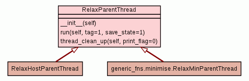

Trees
Indices
Help
relax
Module thread_classes
:: Class RelaxParentThread
[
hide private
]
[
frames
] |
no frames
]
Class RelaxParentThread
source code

Instance Methods
[
hide private
]
__init__
(
self
)
Parent class containing the main threading loop.
source code
run
(
self
,
tag
=
1
,
save_state
=
1
)
Run the main threading loop.
source code
thread_clean_up
(
self
,
print_flag
=
0
)
Function for cleaning up the threads.
source code
Trees
Indices
Help
relax
Generated by Epydoc 3.0.1 on Wed Apr 10 13:58:29 2013
http://epydoc.sourceforge.net